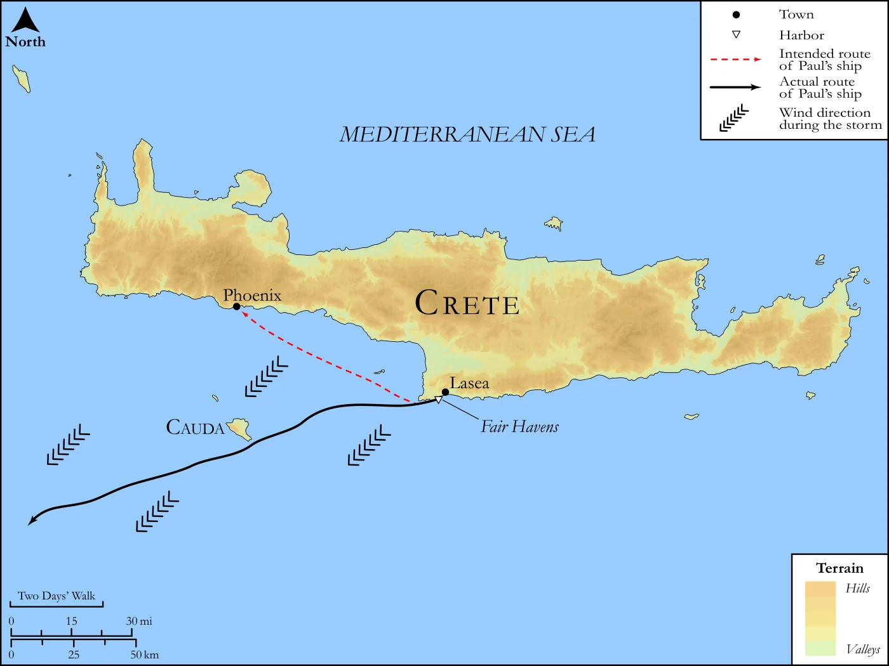
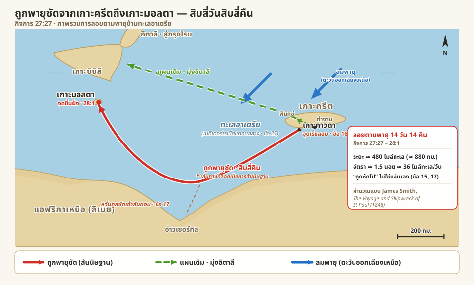
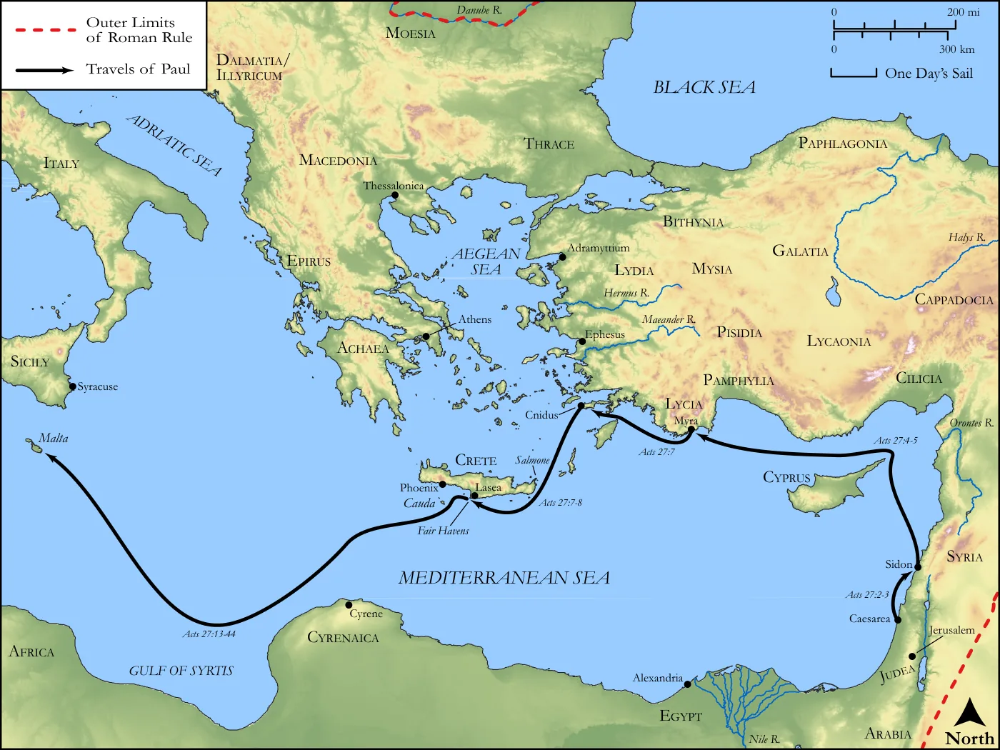
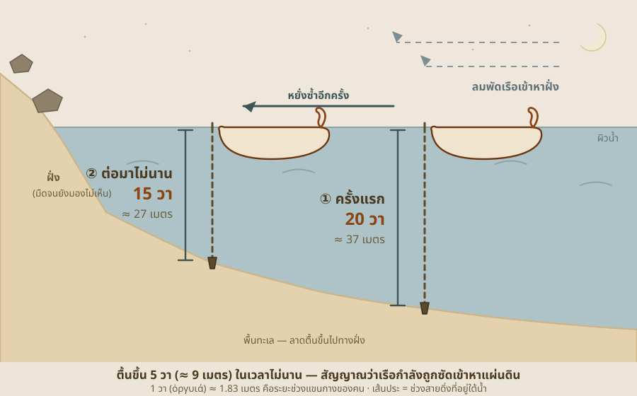
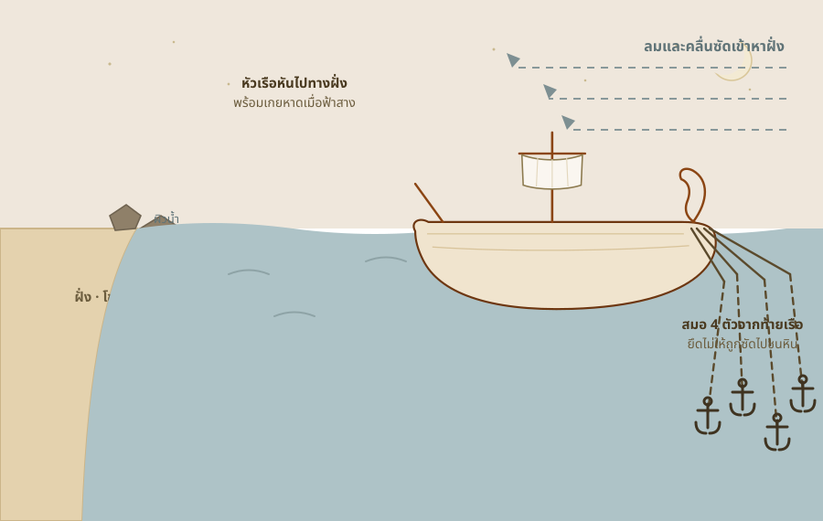
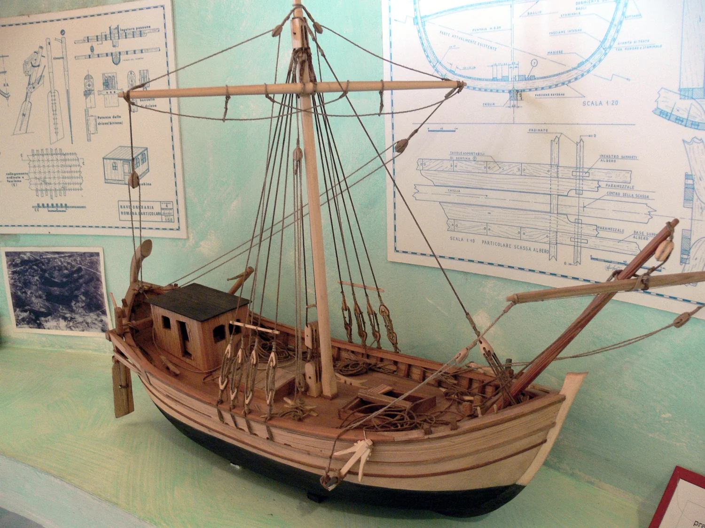
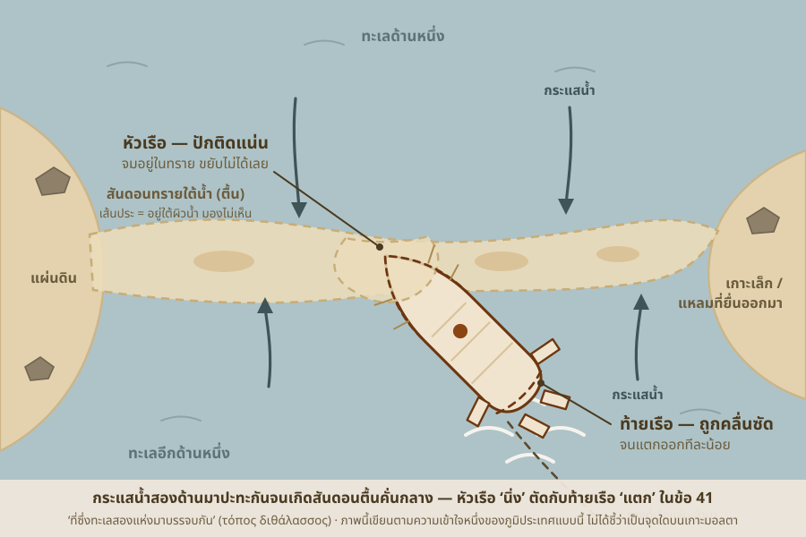

ชีวิตที่มีเจ้าของ ไม่หวั่นแม้เรือจะแตก
กลางพายุที่พรากความหวังไปจนหมด เปาโลลุกขึ้นประกาศคำสัญญาของพระเจ้าผู้เป็นเจ้าของชีวิตเขาว่าจะไม่มีใครตาย และตลอดช่วงวัดใจที่ยาวนาน ความเชื่อที่นิ่งของเขากลายเป็นที่ยึดเหนี่ยวเดียวของคน 276 ชีวิต จนทุกคนขึ้นฝั่งได้ครบโดยไม่ตายแม้แต่คนเดียว
iความหมายของเครื่องหมายในบทความ
กิจการ 27:21-44เรือหลุดเข้าไปในพายุมาหลายวันจนทุกคนหมดหวังที่จะรอด แล้วนักโทษตัวเล็ก ๆ คนหนึ่งก็ลุกขึ้นยืนกลางความสิ้นหวังนั้น บอกว่าจะไม่มีใครตาย มีแต่เรือเท่านั้นที่จะพัง สิ่งที่ค้างในใจผมตอนนี้ไม่ใช่พายุ แต่เป็นความนิ่งของคนที่รู้ว่าชีวิตของตัวเองมีเจ้าของอยู่
“เตือนแล้ว” ที่ไม่ใช่การซ้ำเติม
หลังจากทุกคนไม่ได้กินอะไรมาหลายวัน เปาโลก็ลุกขึ้นพูดว่าน่าจะฟังเขาตั้งแต่แรกว่าอย่าออกเรือ จะได้ไม่ต้องมาเจอความเสียหายแบบนี้[21] ตรงนี้มีคำที่ชวนสงสัยอยู่ คือทำไมเปาโลพูดว่า “อย่าออกจากเกาะครีต” ทั้งที่ตอนนั้นลูกเรือแค่อยากย้ายจากท่าจอดหนึ่งไปอีกท่าหนึ่งที่ยังอยู่บนเกาะเดิม เขาไม่ได้ตั้งใจจะออกทะเลลึกเลย คำตอบคือเปาโลกำลังมองภาพใหญ่ — การตัดสินใจขยับเรือออกจากที่กำบังในวันนั้นแหละคือจุดเริ่มต้นที่ทำให้ทั้งลำหลุดออกไปเจอพายุ1 เขาไม่ได้จับผิดว่า “จะไปฟีนิกซ์ทำไม” แต่กำลังบอกว่า “ถ้าปักหลักอยู่เฉย ๆ ไม่ขยับไปไหน ก็คงไม่ต้องมาเจอเรื่องแบบนี้”
แต่สิ่งที่ทำให้ประโยคนี้ไม่ใช่คำบ่นซ้ำเติมคือสิ่งที่ตามมาทันที เปาโลพลิกจากการย้อนอดีต มาเป็นการให้กำลังใจ — ขอให้เข้มแข็งไว้ เพราะจะไม่มีใครเสียชีวิตเลย มีแต่ตัวเรือเท่านั้นที่จะเสียไป[22] เขาไม่ได้ยืนอยู่เหนือความทุกข์ของคนอื่นเพื่อจะพูดว่า “เห็นไหมล่ะ” แต่ยืนอยู่ท่ามกลางคนที่กำลังจะสิ้นใจ แล้วยื่นความหวังให้
พระเจ้าที่ผมเป็นของพระองค์
พอถามว่าเปาโลเอาความมั่นใจนี้มาจากไหน เขาก็เล่าเรื่องเมื่อคืน มีทูตสวรรค์ของพระเจ้ามายืนอยู่ข้าง ๆ[23] ฉบับแปลไทยบอกว่าเป็นทูตของ “พระเจ้าผู้เป็นเจ้าของชีวิตที่ข้าพเจ้ารับใช้” ซึ่งฟังดูเป็นวลีสวย ๆ ทั่วไป แต่พอไปดูภาษาเดิม (กรีก) กลับพบว่าไม่มีคำว่า “เจ้าของ” หรือ “ชีวิต” อยู่ในนั้นเลย สิ่งที่เปาโลพูดจริง ๆ สั้นและหนักแน่นกว่านั้นมาก คือ “พระเจ้า ผู้ที่ ตัวผมเอง (ἐγώ) เป็นของพระองค์ และผู้ที่ผม ปรนนิบัติรับใช้ (λατρεύω) อยู่”2
คำเล็ก ๆ สองคำนี้แหละที่ภาษาไทยกลบไป คำแรกคือ “ผม” ที่เปาโลใส่เน้นเข้ามาเต็ม ๆ ทั้งที่ในภาษากรีกไม่ต้องใส่ก็ได้ เหมือนเขากำลังปักธงกลางพายุว่า “คนอื่นจะยึดอะไรก็เรื่องของเขา แต่ตัวผมน่ะ ผมเป็นของพระองค์” ส่วนคำว่ารับใช้ก็อยู่ในรูปที่บอกว่าเป็นสิ่งที่ทำต่อเนื่องมาตลอดเป็นวิถีชีวิต ไม่ใช่เพิ่งมานับถือตอนเรือจะล่ม เปาโลกำลังประกาศต่อหน้าคนที่กำลังกราบไหว้ทุกสิ่งด้วยความกลัวว่า ชีวิตพวกเราไม่ได้อยู่ในมือของพายุ ไม่ได้อยู่ในมือกัปตัน แต่อยู่ในมือของพระเจ้าที่เขาผูกชีวิตไว้ด้วยทุกลมหายใจ
แล้วทูตสวรรค์ก็พูดสามอย่าง — อย่ากลัว3 เจ้าต้องไปยืนให้การต่อหน้าซีซาร์ให้ได้4 และพระเจ้า “ได้ประทาน” ทุกคนที่แล่นเรือมากับเจ้าไว้ให้แล้ว[24] คำว่าประทานให้แล้วอยู่ในรูปที่สื่อว่าเป็นของขวัญที่มอบเสร็จเรียบร้อยและยังยืนผลอยู่5 — ไม่ใช่ “เดี๋ยวจะให้” แต่ “ให้แล้ว” ภาพที่ซ่อนอยู่คือ คนทั้ง 275 ชีวิตที่เหลือรอด ไม่ได้รอดเพราะฝีมือกัปตันหรือเพราะดวงดี แต่รอดเพราะพระเจ้ายกชีวิตของพวกเขาให้เป็นของขวัญพ่วงมากับเปาโล คนคนเดียวที่พระองค์ตั้งใจจะพาไปให้ถึงกรุงโรม
เปาโลจึงสรุปว่าขอให้ทุกคนเข้มแข็งไว้ เพราะเขาเชื่อพระเจ้าว่าจะเป็นไปตามที่ทรงบอกไว้แล้วทุกอย่าง[25]6 คำว่าเชื่อตรงนี้ก็เป็นวิถีชีวิตแบบเดียวกับคำว่ารับใช้ คือไม่ใช่ลองเชื่อดูเผื่อฟลุก แต่เป็นความไว้ใจที่ฝังรากมานานและยังยึดมั่นอยู่ เขารู้แค่ว่าเรือจะต้องไปเกยตื้นที่เกาะแห่งหนึ่ง[26] — เกาะไหนยังไม่รู้ รู้แค่ว่าต้องมีเกาะสักแห่งมารองรับพวกเขา ตามที่พระเจ้าบอก7

พายุพัดเรือเปาโลจากเกาะครีตสู่เกาะคาวดา

ช่วงวัดใจกลางทะเลมืด
สิ่งที่ผมชอบมากคือจังหวะเวลาของเรื่องนี้ พระเจ้าไม่ได้บอกเปาโลตั้งแต่วันแรกที่เรือออกจากท่า ไม่ได้บอกตอนพายุเพิ่งมา แต่ปล่อยให้ทุกคนเคว้งอยู่ในความมืดและความหิวไปหลายวันก่อน แล้วค่อยส่งทูตสวรรค์มา “เมื่อคืน” — และพอเปาโลรู้ เขาก็รีบมาบอกทุกคนทันทีในเช้าวันรุ่งขึ้น ไม่รอ ไม่ลังเล พระคัมภีร์ไม่ได้บอกว่าเปาโลกระวนกระวายไหม แต่การที่เขานิ่งอยู่ได้ตลอดหลายวันที่ผ่านมา ท่ามกลางคนที่สติกำลังจะแตก ก็บอกอะไรบางอย่างเกี่ยวกับคนที่พึ่งพิงพระเจ้าจริง ๆ

ภาพรวมการลอยตามพายุ กจ.27:27 — จากเกาะครีตถึงเกาะมอลตา สิบสี่วัน
![แผนที่ทะเลเมดิเตอร์เรเนียนตอนกลางแบบมุมกว้าง เกาะครีตทอดยาวอยู่ทางขวา เกาะมอลตาเป็นเกาะเล็กทางซ้าย เกาะซิซิลีและปลายแหลมอิตาลีอยู่มุมบนซ้าย และแผ่นดินแอฟริกาเหนือกับอ่าวเซอร์ทิสที่เว้าลึกลงไปทางใต้อยู่ด้านล่าง เส้นสีแดงทึบพร้อมหัวลูกศรลากจากเกาะคาวดาใต้เกาะครีต โค้งลงไปทางตะวันตกเฉียงใต้เฉียดอ่าวเซอร์ทิส แล้ววกขึ้นไปจบที่เกาะมอลตา มีเส้นประสั้นชี้ลงไปที่อ่าวเซอร์ทิสกำกับว่ากลัวถูกซัดเข้าสันดอน เส้นสีเขียวประลากจากเกาะครีตขึ้นไปทางตะวันตกเฉียงเหนือแทนแผนเดิมที่จะมุ่งไปอิตาลี ลูกศรสีน้ำเงินสองอันชี้ลงมาจากทิศตะวันออกเฉียงเหนือแทนลมพายุ กล่องข้อความมุมขวาสรุปว่าเรือลอยตามพายุสิบสี่วันสิบสี่คืน ระยะราวสี่ร้อยแปดสิบไมล์ทะเลหรือราวแปดร้อยแปดสิบกิโลเมตร อัตราราวหนึ่งจุดห้านอต ตามการคำนวณของเจมส์ สมิธ มีคำอธิบายสัญลักษณ์ด้านล่าง มาตราส่วนสองร้อยกิโลเมตร และลูกศรชี้ทิศเหนือ](..\assets/figures/acts-27-drift-malta.svg "ดูเต็มจอ / ซูม")

เส้นทางที่เรือถูกพัดจากเกาะคาวดาถึงเกาะมอลตา
![แผนที่ทะเลเมดิเตอร์เรเนียนตะวันออกแบบภูมิประเทศ มีเส้นทึบสีดำพร้อมหัวลูกศรลากเส้นทางเรือของเปาโลจากเมืองซีซารียาริมชายฝั่งยูเดียขึ้นไปไซดอน อ้อมเกาะไซปรัส ไปเมืองมิราในแคว้นลีเซียและเมืองคนีดัส แล้ววกลงใต้ผ่านแหลมสัลโมเนเลียบชายฝั่งใต้ของเกาะครีตถึงท่างามใกล้เมืองลาเซียและเมืองฟีนิกซ์ จากเกาะคาวดาใต้เกาะครีตมีเส้นโค้งใหญ่กำกับว่า Acts 27:13-44 กวาดลงไปทางตะวันตกเฉียงใต้เหนืออ่าวเซอร์ทิสริมชายฝั่งแอฟริกา แล้ววกขึ้นไปจบที่เกาะมอลตาทางใต้ของเกาะซิซิลี มีอิตาลี ทะเลเอเดรียติก ทะเลอีเจียน และทะเลดำอยู่ด้านบน คำอธิบายสัญลักษณ์มุมซ้ายบนบอกว่าเส้นประสีแดงคือขอบเขตการปกครองของโรมและเส้นทึบสีดำคือการเดินทางของเปาโล พร้อมมาตราส่วนระยะและระยะแล่นเรือหนึ่งวัน และลูกศรชี้ทิศเหนือมุมขวาล่าง](..\assets/figures/drift-cauda-malta.webp "ดูเต็มจอ / ซูม")
และคำสัญญาก็ไม่ได้ทำให้ทุกอย่างจบทันที เพราะกว่าจะถึง “คืนที่สิบสี่” ที่ลูกเรือเริ่มรู้สึกว่าใกล้ฝั่ง[27] ก็ยังมีช่วงเวลาอีกพักหนึ่งที่ต้องลอยเคว้งต่อไป นั่นแหละคือช่วงวัดใจ — ช่วงที่ทุกคนต้องเลือกว่าจะเชื่อคำของเปาโลไปจนถึงที่สุด หรือจะสติแตกหนีไปก่อน พอหยั่งน้ำดูแล้วพบว่าตื้นขึ้นเรื่อย ๆ[28] ทุกคนก็กลัวว่าเรือจะไปกระแทกโขดหินกลางความมืด จึงทิ้งสมอสี่ตัวลงจากท้ายเรือ แล้วเฝ้าอธิษฐานให้ถึงรุ่งเช้าเร็ว ๆ[29]8

หยั่งน้ำได้ 20 วา แล้วเหลือ 15 วา


ทำไมทิ้งสมอจาก ‘ท้ายเรือ’

แต่กลางความมืดนั้นเอง กะลาสีกลุ่มหนึ่งคิดจะเอาตัวรอดคนเดียว พวกเขาแสร้งทำเป็นจะหย่อนเรือเล็กลงไปทอดสมอเพิ่มที่หัวเรือ แต่จริง ๆ คือจะแอบพายหนีขึ้นฝั่ง[30] ทิ้งคนอีกเกือบสามร้อยชีวิตไว้บนเรือที่ไม่มีคนบังคับ — เพราะบนเรือสินค้าลำนี้ คนที่รู้วิธีบังคับเรือจริง ๆ มีอยู่แค่กลุ่มกะลาสีกลุ่มเดียว ที่เหลือเป็นทหารกับนักโทษที่ทำเรือไม่เป็น ถ้ากะลาสีหนีไปหมด พอรุ่งเช้าที่ต้องบังคับเรือเข้าเกยหาดก็จะไม่มีใครทำได้ ทุกคนก็ตายกันหมด เปาโลมองออก จึงบอกนายร้อยกับพวกทหารว่า ถ้าคนพวกนี้ไม่อยู่ในเรือ “พวกท่าน” นี่แหละจะรอดไม่ได้[31]9 ทหารจึงตัดเชือกเรือเล็กปล่อยให้ลอยหายไป[32] น่าสังเกตว่าความเชื่อของเปาโลไม่ได้แปลว่านั่งเฉย ๆ รอปาฏิหาริย์ — เขาเชื่อคำสัญญาว่าทุกคนจะรอด แต่ก็ยังลุกขึ้นจัดการกับอันตรายตรงหน้าอย่างเต็มที่
ขนมปังที่หักกลางพายุ
จวนสว่าง เปาโลชักชวนให้ทุกคนกินอาหาร[33] คำว่าชักชวนอยู่ในรูปที่บอกว่าเขาพูดอยู่เรื่อย ๆ ไม่ใช่พูดครั้งเดียว10 เขาบอกว่าสิบสี่วันที่ผ่านมาทุกคนกังวลจนกินอะไรไม่ลง — สังเกตว่าเปาโลไม่ได้บอกว่าเสบียงหมด เพราะเรือขนข้าวสาลีลำนี้ยังมีอาหารอยู่ แต่ความกลัวมันกินจนไม่มีใครอยากอาหารมาสองสัปดาห์ เขาจึงขอให้ทุกคนฝืนกินเพื่อจะมีแรงไว้สู้ตอนเรือแตก แล้วย้ำด้วยความมั่นใจสุด ๆ ว่าจะไม่มีใครเสียแม้ผมสักเส้นเดียว[34]
แล้วภาพต่อไปก็งดงามมาก เปาโลหยิบขนมปังขึ้นมา ขอบพระคุณพระเจ้าต่อหน้าทุกคน แล้วหักกิน[35] เขาขอบพระคุณอย่างเปิดเผยกลางวงคนหิวโหยและหวาดกลัว มันกลายเป็นคำพยานเงียบ ๆ ที่ทำให้คนรอบข้างใจชื้นขึ้นและเริ่มกินตาม[36] แม้คนทั้ง 276 คนส่วนใหญ่จะไม่ได้นับถือพระเจ้าองค์เดียวกับเปาโล[37] ผมสะดุดใจตรงที่ การหักขนมปังของคริสเตียนยุคแรกไม่ได้ถูกจับไปไว้เฉพาะพิธีในวันอาทิตย์เหมือนภาพในโบสถ์ทุกวันนี้ แต่เป็นวิถีชีวิตธรรมดา ทุกครั้งที่นั่งกินข้าวด้วยกันก็ระลึกถึงพระคุณของพระเจ้า — แม้แต่มื้อกลางพายุบนเรือที่กำลังจะแตกก็ยังทำได้ พอกินอิ่มพวกเขาก็โยนข้าวสาลีที่เหลือทิ้งทะเลให้เรือเบาขึ้น เตรียมพร้อมสำหรับเช้าที่กำลังจะมา[38]

เรือสินค้าโรมันบรรทุกข้าว (โมเดลจำลอง)

{kind=link}
หัวเรือนิ่ง ท้ายเรือแตก — แต่ทุกคนรอด
พอฟ้าสาง พวกเขาเห็นอ่าวที่มีหาดทราย แต่จำไม่ได้ว่าเป็นที่ไหน จึงตัดสินใจบังคับเรือพุ่งเข้าเกยหาด[39] คราวนี้กะลาสีงัดทุกทักษะที่มีออกมาเต็มที่ — ตัดสมอทิ้ง แก้เชือกหางเสือ ชักใบเรือรับลม แล้วแล่นตรงเข้าฝั่ง[40] แต่เรือดันไปชนสันดอน[41] แล้วลูกาก็วางภาพสองด้านไว้ตรงข้ามกันอย่างจงใจ — หัวเรือติดแน่นนิ่งขยับไม่ได้ ส่วนท้ายเรือค่อย ๆ ถูกคลื่นซัดจนแตกเป็นเสี่ยง ๆ11 ความพยายามของมนุษย์พาพวกเขามาถึงหาดได้จริง แต่พาเรือทั้งลำรอดไม่ได้ สุดท้ายเรือก็พังไปตามคำที่เปาโลบอกไว้ตั้งแต่แรกว่า “มีแต่เรือเท่านั้นที่จะเสียไป”

‘ที่ซึ่งทะเลสองแห่งมาบรรจบกัน’

แล้วก็ถึงวินาทีสุดท้ายที่ตึงเครียดที่สุด พวกทหารวางแผนจะฆ่านักโทษทิ้งเพื่อกันไม่ให้ว่ายหนี[42] แต่นายร้อยอยากไว้ชีวิตเปาโล จึงห้ามไว้ แล้วสั่งให้คนที่ว่ายน้ำเป็นกระโดดลงไปก่อน ที่เหลือให้เกาะไม้กระดานหรือเศษเรือลอยตามไป[43] ซากเรือที่เพิ่งแตกกลายเป็นแพชีวิตพาทุกคนเข้าฝั่ง และประโยคปิดท้ายก็เรียบ ๆ แต่หนักแน่น — “โดยวิธีนี้ทุกคนจึงขึ้นฝั่งอย่างปลอดภัย”[44]12 คน 276 ชีวิต ไม่ตกหล่นแม้แต่คนเดียว ตรงตามที่เปาโลประกาศไว้กลางพายุทุกตัวอักษร
หลังเคว้งอยู่ในพายุจนทุกคนหมดหวัง เปาโลลุกขึ้นบอกว่าน่าจะฟังเขาตั้งแต่แรก แต่ไม่ใช่เพื่อซ้ำเติม — เขาพลิกมาให้กำลังใจทันทีว่าจะไม่มีใครตาย เพราะเมื่อคืนทูตสวรรค์ของพระเจ้าที่เขาเป็นของพระองค์และรับใช้อยู่มายืนยันว่าเขาต้องไปให้ถึงซีซาร์ และพระเจ้าประทานชีวิตทุกคนบนเรือให้พ่วงมากับเขาแล้ว เปาโลเชื่อสนิทว่าจะเป็นไปตามนั้น ทั้งที่กว่าจะรอดจริงก็ยังมีช่วงวัดใจอีกหลายวัน ระหว่างนั้นกะลาสีพยายามหนีเอาตัวรอด เปาโลก็เตือนให้ตัดเชือกเรือเล็กไว้ พอจวนสว่างเขาชวนทุกคนกินอาหารและขอบพระคุณพระเจ้าอย่างเปิดเผย จนคนใจชื้นและมีแรงสู้ พอฟ้าสางเรือก็เกยสันดอน หัวเรือติดแน่นแต่ท้ายเรือแตกยับ — ความสามารถของมนุษย์พามาถึงหาดได้ แต่กอบกู้เรือไม่ได้ กระนั้นคนทั้ง 276 ชีวิตก็ขึ้นฝั่งครบทุกคน ไม่ตายแม้แต่คนเดียว ตรงตามคำสัญญาทุกอย่าง ทั้งตอนนี้กำลังบอกเราว่า เมื่อมนุษย์ทำจนสุดกำลังแล้วยังไปไม่รอด นั่นแหละคือจุดที่อำนาจของพระเจ้าสำแดงออกชัดที่สุด
สิ่งที่ผมประทับใจในวันนี้
อ่านตอนนี้จบ สิ่งที่ทำให้ผมทึ่งที่สุดคือ ทุกคนรอดจริง ๆ ไม่ตายแม้แต่คนเดียว ผมเคยเป็นทหารเรือ เลยพอรู้ว่าอุบัติเหตุเรือกลางทะเลเปิดมันเอาชีวิตคนไปง่ายแค่ไหน อย่างเรือหลวงสุโขทัยล่ม ทั้งที่เป็นทหารเรืออาชีพมีอุปกรณ์พร้อม ก็ยังมีคนต้องเสียชีวิต การที่คนเกือบสามร้อยชีวิตบนเรือไม้โบราณที่ไม่มีเสื้อชูชีพ ไม่มีวิทยุขอความช่วยเหลือ ต้องลอยคอเกาะเศษไม้เข้าฝั่งกลางพายุ แล้วรอดครบทุกคน — ในทางสถิติมันแทบเป็นไปไม่ได้เลย ผมอธิบายความรู้สึกนี้ไม่ค่อยถูก แต่มันทำให้เห็นชัดว่า เมื่อพระเจ้าบอกว่าจะเป็นอย่างไร แล้วมันเป็นอย่างนั้นจริง ๆ มันมีพลังอำนาจแค่ไหน
แต่สิ่งที่ผมอยากได้ติดตัวไปมากที่สุดจากตอนนี้ คือความเชื่อแบบเปาโล เขาไม่ได้มั่นใจเพราะเก่งเดินเรือหรือเพราะคิดทางออกเองได้ แต่เพราะเขาได้ยินเสียงพระเจ้า แล้วเชื่อในสิ่งที่ได้ยินจนกล้าประกาศออกไปต่อหน้าคนเกือบสามร้อยที่กำลังสติแตก ผมอยากฝึกที่จะได้ยินเสียงของพระเจ้าให้เป็น อยากเชื่อมั่นในพระองค์ได้หนักแน่นแบบนั้น และอยากกล้าส่งต่อความหวังให้คนรอบข้างในวันที่ทุกอย่างมืดมิด ไม่ใช่เก็บความมั่นใจไว้คนเดียว
และผมยังติดใจเรื่องจังหวะเวลาอยู่ พระเจ้าไม่ได้บอกเปาโลตั้งแต่วันแรก แต่บอกในคืนที่เขาจำเป็นต้องรู้ และหลังจากนั้นก็ยังมีช่วงวัดใจอีกหลายวันกว่าจะรอดจริง ผมว่านั่นแหละคือบทเรียนสำหรับผม — พระเจ้ามักบอกเราในเวลาที่เราต้องรู้ ไม่ใช่เร็วกว่านั้น และมักมีช่วงเวลาที่ต้องพิสูจน์ว่าเราจะเชื่อพระองค์เป็นวิถีชีวิตจริง ๆ ไหม ไม่ใช่แค่ตอนที่ทุกอย่างสบายดี เรื่องสั้น ๆ ตอนนี้ แต่บทเรียนไม่สั้นเลย
Footnotes
คำเตือนเดิมที่เปาโลย้อนถึงอยู่ก่อนหน้านี้ ตอนเรือจอดอยู่ที่ท่างามบนเกาะครีต เขาเตือนว่าถ้าฝืนออกเรือต่อจะเจอหายนะทั้งต่อสินค้า เรือ และชีวิต — ดู กิจการ 27:9-10 การที่ลูกเรืออยากย้ายไปท่าฟีนิกซ์ซึ่งอยู่บนเกาะครีตเหมือนกัน แต่กลับถูกพายุพัดหลุดออกทะเลลึก จึงเป็นเหตุที่เปาโลสรุปย้อนหลังว่า “ไม่ควรออกจากเกาะครีต” คือไม่ควรขยับเรือออกจากที่กำบังตั้งแต่วันนั้น↩︎
ในภาษาเดิม (กรีก) ข้อ 23 เปาโลใช้คำเน้นสองคำที่ฉบับแปลไทยขยายความออกมาเป็น “ผู้เป็นเจ้าของชีวิต” คำแรกคือสรรพนาม egō (ἐγώ, G1473) “ข้าพเจ้า” ที่ใส่เข้ามาเน้นตัวบุคคลเป็นพิเศษ ทั้งที่รูปกริยาบอกประธานอยู่แล้ว จึงไม่จำเป็นต้องใส่ — การใส่จึงเป็นการเน้น “ตัวข้าพเจ้าเองนี่แหละ” คู่กับวลี hou eimi (οὗ εἰμι) “ผู้ที่ข้าพเจ้าเป็นของพระองค์” ที่สื่อถึงการเป็นกรรมสิทธิ์/สังกัดของพระเจ้า ในกรีกไม่มีคำว่า “เจ้าของ” หรือ “ชีวิต” ตรง ๆ แต่ความหมายนั้นซ่อนอยู่ในโครงสร้าง “ผู้ที่ข้าพเจ้าเป็นของ” — ดู Wallace, Greek Grammar Beyond the Basics หัวข้อ Nominative pronoun ที่ใช้เพื่อเน้น↩︎
“อย่ากลัว” ในภาษาเดิมคือ mē phobou (μὴ φοβοῦ, φοβέομαι G5399) เป็นรูปห้ามที่ใช้กับกริยาต่อเนื่อง สื่อความหมายว่า “เลิกกลัวเถอะ / อย่าจมอยู่ในความกลัวต่อไป” มากกว่าการห้ามชั่วขณะ (รูปนี้เป็นการเลือกใช้ของผู้เขียนจริง เพราะกริยานี้มีทั้งรูปต่อเนื่องและรูปชั่วขณะให้เลือก) — ดู Wallace, GGBB หัวข้อ Present Imperative in Prohibitions↩︎
คำว่า “ซีซาร์” (Kaisari, Καῖσαρ G2541) ในข้อ 24 ถูกวางไว้หน้ากริยาในภาษาเดิม ซึ่งเป็นตำแหน่งที่ใช้เน้นความสำคัญ (Focus) เท่ากับบอกว่าปลายทางที่พระเจ้ากำหนดไว้ให้เปาโลคือ “ต่อหน้าซีซาร์” อย่างแน่นอน เหนือกว่าพายุใด ๆ ที่ขวางอยู่ — ดู Levinsohn, Discourse Features of New Testament Greek หัวข้อ marked constituent order↩︎
คำว่า “ประทานให้แล้ว” คือ kecharistai (κεχάρισται, χαρίζομαι G5483) รากเดียวกับคำว่า charis ที่แปลว่าพระคุณ/ของขวัญที่ให้เปล่า อยู่ในรูปที่สื่อว่าเป็นการกระทำที่เสร็จสมบูรณ์แล้วและผลยังยืนอยู่ (perfect) จึงเป็นภาพของ “ของขวัญที่มอบเสร็จแล้ว” ไม่ใช่สิ่งที่จะให้ในอนาคต ชีวิตของทุกคนบนเรือถูกมอบให้เปาโลไว้แล้วในแผนของพระเจ้า — ดู Wallace, GGBB หัวข้อ Intensive (Resultative) Perfect↩︎
“เชื่อ” ในข้อ 25 คือ pisteuō (πιστεύω, G4100) อยู่ในรูปปัจจุบันที่สื่อถึงความไว้วางใจที่ต่อเนื่องเป็นวิถีชีวิต ไม่ใช่การเชื่อชั่ววูบ เข้าคู่กับคำว่า “รับใช้” (latreuō) ในข้อ 23 ที่อยู่ในรูปเดียวกัน — ทั้งการรับใช้และการเชื่อของเปาโลเป็นสิ่งที่หยั่งรากมานานและยังดำเนินอยู่ทุกลมหายใจ↩︎
“เกาะสักแห่ง” ในข้อ 26 ภาษาเดิมใช้คำว่า nēson tina (νῆσόν τινα, νῆσος G3520 + τις G5100) “เกาะแห่งหนึ่ง” ที่ยังไม่ระบุชื่อ เพราะขณะนั้นเปาโลเองก็ยังไม่รู้ว่าเป็นเกาะอะไร (ภายหลังจึงรู้ว่าคือเกาะมอลตา) ส่วนคำว่า “ต้อง…เกยตื้น” ใช้คำว่า dei (δεῖ G1210) ที่บ่งถึงความจำเป็นตามแผนที่พระเจ้ากำหนดไว้ คู่กับ ekpesein (ἐκπίπτω G1601) “ถูกซัดไปเกย” — ดู BDAG หัวข้อ δεῖ และ ἐκπίπτω↩︎
ในข้อ 29 ลูกเรือทิ้ง “สมอสี่ตัว” (ankyras tessaras, ἄγκυρα G45) ลงจาก “ท้ายเรือ” (ek prymnēs, πρύμνα G4403) ซึ่งผิดจากปกติที่เรือมักทอดสมอจากหัวเรือ การทอดสมอจากท้ายเรือช่วยให้หัวเรือยังหันไปทางฝั่ง พร้อมจะแล่นเข้าเกยหาดทันทีเมื่อฟ้าสาง และช่วยยึดเรือไม่ให้ถูกซัดไปชนโขดหินกลางความมืด · ส่วนคำว่า “อธิษฐาน” (ēuchonto, εὔχομαι G2172) อยู่ในรูปที่สื่อถึงการอธิษฐานอยู่เรื่อย ๆ ตลอดคืน ไม่ใช่อธิษฐานครั้งเดียว — ดู BDAG หัวข้อ ἄγκυρα และ Wallace, GGBB หัวข้อ Iterative Imperfect↩︎
“พวกท่าน” ในข้อ 31 คือสรรพนาม hymeis (ὑμεῖς, σύ G4771) ที่ใส่เข้ามาเน้นเป็นพิเศษ ทั้งที่รูปกริยาบอกบุรุษอยู่แล้ว เพื่อตัดกับ “คนพวกนี้” (houtoi, οὗτοι — พวกกะลาสี) เป็นการชี้ชัดว่า “พวกท่าน (ทหารกับนักโทษ) นี่แหละจะรอดไม่ได้ ถ้าปล่อยให้กะลาสีหนีไป” — ดู Wallace, GGBB หัวข้อ Nominative pronoun เพื่อเน้นและเปรียบต่าง↩︎
“ชักชวน” ในข้อ 33 คือ parekalei (παρεκάλει, παρακαλέω G3870) อยู่ในรูปที่สื่อว่าเปาโลชักชวนอยู่เรื่อย ๆ ไม่ใช่พูดครั้งเดียวจบ (รูปเดียวกับที่ลูกาใช้บรรยายการเตือนของเปาโลก่อนหน้านี้) — ดู Wallace, GGBB หัวข้อ Iterative/Progressive Imperfect↩︎
ข้อ 41 ลูกาวางคำสองคำไว้ตรงข้ามกันอย่างจงใจด้วยโครงสร้าง men…de (μέν…δέ) — “หัวเรือ (prōra, πρῷρα G4408) ติดแน่นนิ่ง” ตัดกับ “ท้ายเรือ (prymna, πρύμνα G4403) กำลังถูกซัดจนแตก” คำว่าแตก (elyeto, λύω G3089) อยู่ในรูปที่สื่อว่าท้ายเรือค่อย ๆ ถูกคลื่นทำให้แตกทีละน้อย และเป็นฝ่ายถูกกระทำ (เรือทำอะไรไม่ได้ คลื่นเป็นผู้กระทำ) — ดู Wallace, GGBB หัวข้อ Progressive Imperfect และ Passive Voice↩︎
“ทุกคน…อย่างปลอดภัย” ในข้อ 44 ใช้คำว่า diasōthēnai (διασῴζω G1295) ประกอบจาก dia (“ทะลุผ่านตลอดรอด”) + sōzō (“ช่วยให้รอด”) จึงหมายถึงการถูกนำให้รอดพ้นภัยมาได้อย่างครบถ้วน และอยู่ในรูปถูกกระทำ (ถูกช่วยให้รอด ไม่ใช่รอดด้วยกำลังตัวเอง) คู่กับคำว่า pantas (πᾶς G3956) “ทุกคน” ที่ย้ำว่าไม่มีใครตกหล่น เป็นคำสำเร็จของสัญญาที่เปาโลได้รับในข้อ 22-24 — ดู BDAG หัวข้อ διασῴζω↩︎